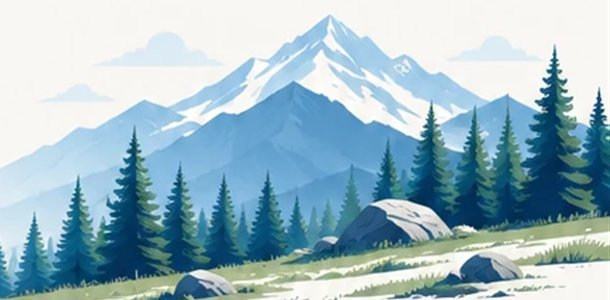

Поради
Перший похід без стресу
Усе, що варто знати до виходу на стежку.

Підготовка
-
Обери маршрут за силами
Для першого разу — до 15 км і 800 м набору.
-
Перевір прогноз погоди за 3 дні
Гроза в горах — причина перенести вихід.
-
Повідом близьким маршрут і час повернення
І зареєструйся в рятувальників перед складним маршрутом.
-
Розходи взуття заздалегідь
Нові черевики в перший день — гарантовані мозолі.
Безпека
Екстрені номери
Гірська пошуково-рятувальна служба ДСНС. Запиши номери в телефон до виходу — зв'язок у горах буває не всюди.
- Не сходь зі стежки — так найпростіше заблукати.
- Гроза — одразу вниз з хребта, подалі від вершин.
- Не йди сам у перший похід.
- Розворот — це нормально. Гора нікуди не дінеться.
FAQ
Чи потрібна фізична підготовка?
Для легких маршрутів достатньо гуляти 2–3 години без втоми. Почни з одноденного походу, а перед складним маршрутом кілька тижнів ходи пішки й піднімайся сходами.
Скільки коштує перший похід?
Одноденний похід — від 1 000–1 500 ₴ на людину з дорогою та їжею. Точніше порахує конструктор походу.
Що робити, якщо заблукав?
Зупинись і не панікуй. Повернися до останньої впевненої точки маршруту, перевір офлайн-карту. Якщо стемніло або є травма — дзвони 112 чи 101 і залишайся на місці.
Чи можна в похід з дітьми?
Так, обирай короткі легкі маршрути: Синевирське озеро чи водоспад Кам'янка. Закладай удвічі більше часу й більше перекусів.
Де ночувати в горах?
У наметі на облаштованих стоянках, у колибах на полонинах або в готелі в селі біля старту. У національних парках ставити намет можна лише в дозволених місцях.